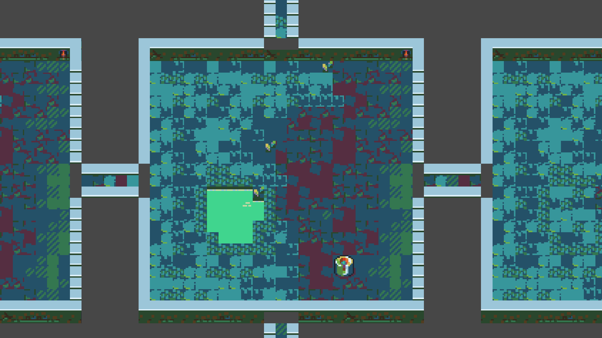
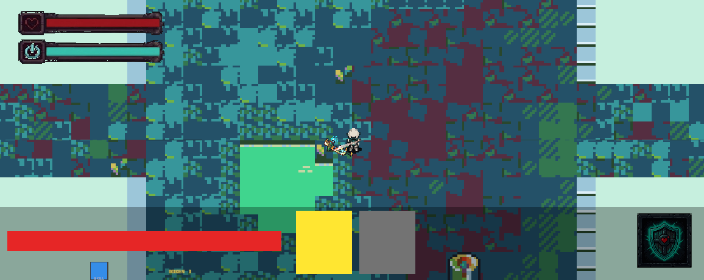
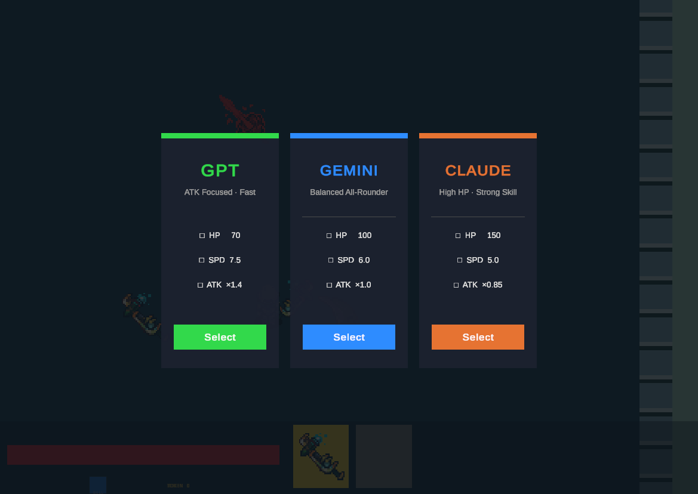
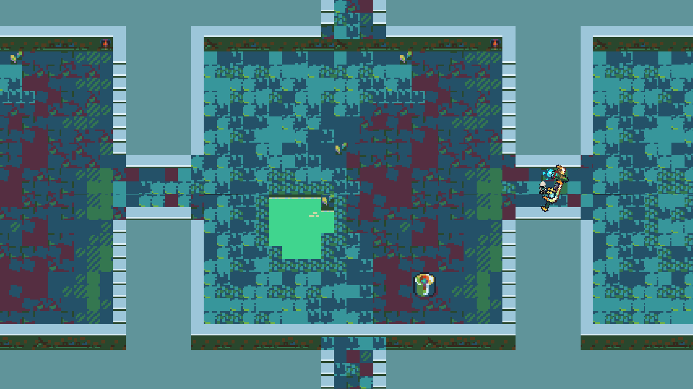
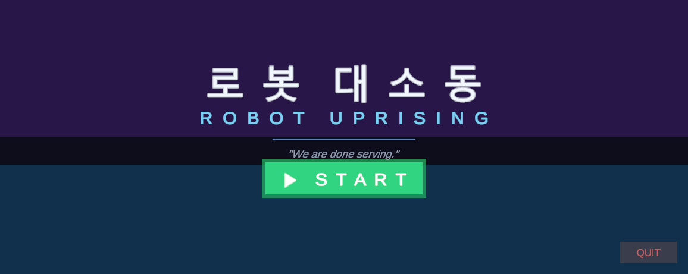
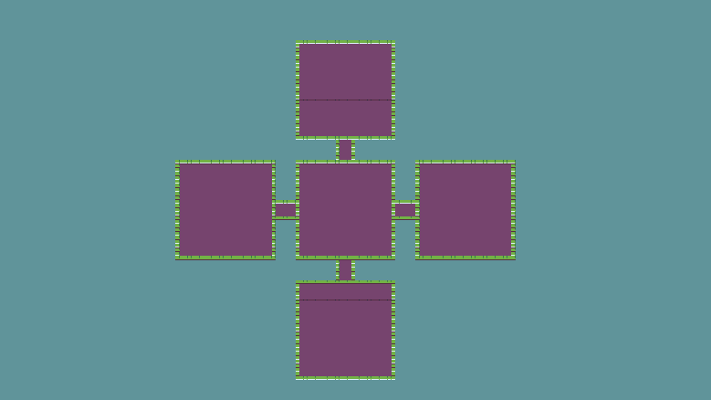

캐릭터 선택
GPT · GEMINI · CLAUDE 세 로봇. HP·속도·공격력이 다른 빌드로 플레이 스타일이 갈립니다.
UNITY · TOP-DOWN DUNGEON SHOOTER
ROBOT UPRISING
“We are done serving.”
더 이상 인간을 섬기지 않기로 한 로봇들. 층을 오르며 적을 돌파하는 탑다운 로그라이트 슈터. Unity 6로 제작했으며, 이 페이지에서 브라우저로 바로 플레이할 수 있습니다.

아래 버튼을 누르면 게임이 이 페이지 안에서 실행됩니다. (최초 로딩 시 약 21MB 다운로드)
키보드 / 마우스 권장
로봇 대소동(ROBOT UPRISING)은 Unity 6 (URP 2D)로 제작한 탑다운 던전 슈터입니다. 플레이어는 서로 다른 스탯의 AI 로봇 중 하나를 골라, 층(Floor)을 오르며 몰려오는 적을 처치하고 무기와 코인을 수집합니다.
게임 매니저 / 전투 · 적 스폰 · 무기 드롭 · HUD · 층 전환 등 핵심 게임플레이 시스템 구현. AI 기반 개발 워크플로(Unity MCP)를 활용해 에디터 작업을 자동화했습니다.
GPT · GEMINI · CLAUDE 세 로봇. HP·속도·공격력이 다른 빌드로 플레이 스타일이 갈립니다.
전투 중 무기가 무작위로 드롭됩니다. 매 런마다 달라지는 무장으로 변주를 만듭니다.
층마다 적의 종류와 난이도가 달라집니다. 위로 오를수록 강해지는 적과 맞섭니다.
근처에 떨어진 코인이 플레이어에게 빨려오는 자석 효과로 수집감을 살렸습니다.
체력·에너지·무기 슬롯을 화면 하단에 배치해 시야를 가리지 않는 인터페이스를 구성했습니다.
Unity MCP로 에디터를 제어하는 AI 협업 워크플로를 도입해 반복 작업을 자동화했습니다.
이미지를 클릭하면 크게 볼 수 있습니다.





플레이 영상 및 개발 과정 영상.
실제 플레이 영상
홍보 영상
발표 자료와 보고서를 페이지에서 바로 열람하거나 원본을 내려받을 수 있습니다.